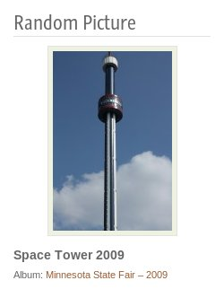
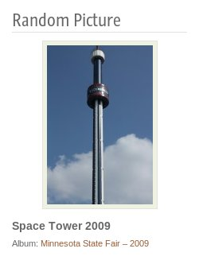

mattrude.github.com — Random Image Block plugin for WordPress
mattrude.github.com / Random Image Block plugin for WordPress
The Random Image Block is a small WordPress plugin that will display a random image from your native WordPress photo galley or in-beaded images.
This widget will display the thumbnail of the random image, the .caption. and the images parent posts name. You may show all pictures on your site, or limit the selection to a single category if you wish. The Widgets title is also fully configurable. Random Image Widget was designed with full internationalization in mind and can be fully translated (Any help on this would be appreciated).
As of Version 0.3 this plugin works out of the box with out and configuration (assuming you have pictures on your site).
The Random Image Block plugin works with WordPress 3.0+ in both single and multi site modes. As a Site Admin, you may activate this plugin across all the sites on your install.
If you have any problems or concerns with this plugin, please leave a comment below.
This Plugin is fully translated into the following languages:
- Arabic
- Czech
- Finnish
- French
- Danish
- Dutch
- German
- Indonesian
- Italian
- Portuguese
- Russian
- Spanish
If you would like to help translating this plugin, or you see a problem with the current translation, please contact me.
Download
The Current Version is 0.9.1 released on October 3rd, 2010.
You can also clone the project with Git by running:
$ git clone git://github.com/mattrude/random-image-block
If your using git, make sure to hit the
Random Image Block's github page.
Screen Shots
 

Dependencies
WordPress 2.9+
Installing
As with most WordPress plugins, there is two ways of installing this plugin.
Primary Option
- Go to your WordPress Dashboard and login as an Admin
- From your Dashboard go to
Plugins section on the left hand side and select Add New.
- Search for
Random Image Block
- Click the
Install Now link and follow the instructions.
Backup Option
- Download the latest version from the download page (http://wordpress.org/extend/plugins/random-image-block/)
- Extract the zip file and copy the folder "random-image-block" into the "wp-content/plugins/" directory in your WordPress installation.
- Activate the plugin from your Dashboard by going to Plugins -> Installed page.
Frequently Asked Questions
Q: May I have more the one image on my sidebar?
- Sure, just add a second or third widget to the sidebar, but you can't do it from within this widget.
Q: May I display more then one category at once?
- No, you may only display a single category or all categories per widget.
Q: I have no picture in my sidebar, the widget doesn't work!
- Make sure the category you have selected has pictures in it, if it doesn't, nothing will be displayed.
Q: Will this plugin work with WP Super Cache enabled?
- Unfortunately, no. WP Super Cache caches all php built html pages for quicker page loads. Since the Random Image Block is built directly into the html page, with WP Super Cache enabled, you will see the same random image on the same page until the cache refreshes. Each page will still have a diffrent image, but they will not update. Currently there is no work around.
Change Log
Version 0.9.1
- Fixed bug where default options were always on
Version 0.9
- Added Advanced Options
- Allow for custom Meta data
- Added Tranlation for: Arabic, Czech, Danish, Dutch, Finnish, Indonesian, & Russian
Version 0.8
- Added ability to link to the album vs the image.
Version 0.7
- Changed to dropdown box for category selection, translaion files have not been fully updated, yet.
Version 0.6
- Added ability to center image in the wiget area
Version 0.5
- Switched to '{$before_widget}{$before_title}'... to try and resolve some display problems
Version 0.4
- Translated into: French, German, Italian, Portuguese, & Spanish
Version 0.3
- Fixed bug that showed no picture if the category box was left blank.
- Single Category check box now works.
Version 0.2
- Added check box to allow single category.
Version 0.1
License
This plugin is licensed under the GPLv2. A copy of the license also comes with every copy download.
GNU GENERAL PUBLIC LICENSE
Version 2, June 1991
Copyright (C) 1989, 1991 Free Software Foundation, Inc.
51 Franklin Street, Fifth Floor, Boston, MA 02110-1301, USA
Everyone is permitted to copy and distribute verbatim copies
of this license document, but changing it is not allowed.
Authors
Matt Rude m@mattrude.com